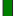

<!doctype html>
<html lang="en">
    <head>
        <meta charset="utf-8">
        <meta http-equiv="X-UA-Compatible" content="IE=edge">
        <meta name="viewport" content="initial-scale=1,user-scalable=no,maximum-scale=1,width=device-width">
        <meta name="mobile-web-app-capable" content="yes">
        <meta name="apple-mobile-web-app-capable" content="yes">
        <link rel="stylesheet" href="css/leaflet.css">
        <link rel="stylesheet" href="css/qgis2web.css"><link rel="stylesheet" href="css/fontawesome-all.min.css">
        <link rel="stylesheet" href="css/leaflet-search.css">
        <style>
        html, body, #map {
            width: 100%;
            height: 100%;
            padding: 0;
            margin: 0;
        }
        </style>
        <title></title>
    </head>
    <body>
        <div id="map">
        </div>
        <script src="js/qgis2web_expressions.js"></script>
        <script src="js/leaflet.js"></script>
        <script src="js/multi-style-layer.js"></script>
        <script src="js/leaflet-svg-shape-markers.min.js"></script>
        <script src="js/leaflet.rotatedMarker.js"></script>
        <script src="js/leaflet.pattern.js"></script>
        <script src="js/leaflet-hash.js"></script>
        <script src="js/Autolinker.min.js"></script>
        <script src="js/rbush.min.js"></script>
        <script src="js/labelgun.min.js"></script>
        <script src="js/labels.js"></script>
        <script src="js/leaflet-search.js"></script>
        <script src="data/Vylt_1.js"></script>
        <script src="data/Korit_2.js"></script>
        <script src="data/Tiit_3.js"></script>
        <script>
        var highlightLayer;
        function highlightFeature(e) {
            highlightLayer = e.target;
            highlightLayer.openPopup();
        }
        var map = L.map('map', {
            zoomControl:true, maxZoom:28, minZoom:1
        })
        var hash = new L.Hash(map);
        map.attributionControl.setPrefix('<a href="https://github.com/tomchadwin/qgis2web" target="_blank">qgis2web</a> &middot; <a href="https://leafletjs.com" title="A JS library for interactive maps">Leaflet</a> &middot; <a href="https://qgis.org">QGIS</a>');
        var autolinker = new Autolinker({truncate: {length: 30, location: 'smart'}});
        var bounds_group = new L.featureGroup([]);
        function setBounds() {
            if (bounds_group.getLayers().length) {
                map.fitBounds(bounds_group.getBounds());
            }
        }
        var img_Leikattu_0 = 'data/Leikattu_0.png';
        var img_bounds_Leikattu_0 = [[60.464376129089956,27.420683783945076],[60.47494885531997,27.436408074356173]];
        var layer_Leikattu_0 = new L.imageOverlay(img_Leikattu_0, img_bounds_Leikattu_0);
        bounds_group.addLayer(layer_Leikattu_0);
        map.addLayer(layer_Leikattu_0);
        function pop_Vylt_1(feature, layer) {
            layer.on({
                mouseout: function(e) {
                    if (typeof layer.closePopup == 'function') {
                        layer.closePopup();
                    } else {
                        layer.eachLayer(function(feature){
                            feature.closePopup()
                        });
                    }
                },
                mouseover: highlightFeature,
            });
            var popupContent = '<table>\
                    <tr>\
                        <td colspan="2">' + (feature.properties['rata'] !== null ? autolinker.link(feature.properties['rata'].toLocaleString()) : '') + '</td>\
                    </tr>\
                    <tr>\
                        <td colspan="2">' + (feature.properties['Pituus'] !== null ? autolinker.link(feature.properties['Pituus'].toLocaleString()) : '') + '</td>\
                    </tr>\
                </table>';
            layer.bindPopup(popupContent, {maxHeight: 400});
        }

        function style_Vylt_1_0() {
            return {
                pane: 'pane_Vylt_1',
                opacity: 1,
                color: 'rgba(178,223,138,1.0)',
                dashArray: '',
                lineCap: 'square',
                lineJoin: 'bevel',
                weight: 8.0,
                fillOpacity: 0,
                interactive: true,
            }
        }
        map.createPane('pane_Vylt_1');
        map.getPane('pane_Vylt_1').style.zIndex = 401;
        map.getPane('pane_Vylt_1').style['mix-blend-mode'] = 'normal';
        var layer_Vylt_1 = new L.geoJson(json_Vylt_1, {
            attribution: '',
            interactive: true,
            dataVar: 'json_Vylt_1',
            layerName: 'layer_Vylt_1',
            pane: 'pane_Vylt_1',
            onEachFeature: pop_Vylt_1,
            style: style_Vylt_1_0,
        });
        bounds_group.addLayer(layer_Vylt_1);
        map.addLayer(layer_Vylt_1);
        function pop_Korit_2(feature, layer) {
            layer.on({
                mouseout: function(e) {
                    if (typeof layer.closePopup == 'function') {
                        layer.closePopup();
                    } else {
                        layer.eachLayer(function(feature){
                            feature.closePopup()
                        });
                    }
                },
                mouseover: highlightFeature,
            });
            var popupContent = '<table>\
                    <tr>\
                        <td colspan="2">' + (feature.properties['title'] !== null ? autolinker.link(feature.properties['title'].toLocaleString()) : '') + '</td>\
                    </tr>\
                </table>';
            layer.bindPopup(popupContent, {maxHeight: 400});
        }

        function style_Korit_2_0() {
            return {
                pane: 'pane_Korit_2',
                radius: 14.0,
                opacity: 1,
                color: 'rgba(250,139,57,1.0)',
                dashArray: '',
                lineCap: 'butt',
                lineJoin: 'miter',
                weight: 4.0,
                fill: true,
                fillOpacity: 1,
                fillColor: 'rgba(31,120,180,1.0)',
                interactive: true,
            }
        }
        function style_Korit_2_1() {
            return {
                pane: 'pane_Korit_2',
                radius: 5.72728,
                opacity: 1,
                color: 'rgba(250,176,124,1.0)',
                dashArray: '',
                lineCap: 'butt',
                lineJoin: 'miter',
                weight: 1.0,
                fill: true,
                fillOpacity: 1,
                fillColor: 'rgba(31,120,180,1.0)',
                interactive: true,
            }
        }
        map.createPane('pane_Korit_2');
        map.getPane('pane_Korit_2').style.zIndex = 402;
        map.getPane('pane_Korit_2').style['mix-blend-mode'] = 'normal';
        var layer_Korit_2 = new L.geoJson.multiStyle(json_Korit_2, {
            attribution: '',
            interactive: true,
            dataVar: 'json_Korit_2',
            layerName: 'layer_Korit_2',
            pane: 'pane_Korit_2',
            onEachFeature: pop_Korit_2,
            pointToLayers: [function (feature, latlng) {
                var context = {
                    feature: feature,
                    variables: {}
                };
                return L.shapeMarker(latlng, style_Korit_2_0(feature));
            },function (feature, latlng) {
                var context = {
                    feature: feature,
                    variables: {}
                };
                return L.shapeMarker(latlng, style_Korit_2_1(feature));
            },
        ]});
        bounds_group.addLayer(layer_Korit_2);
        map.addLayer(layer_Korit_2);
        function pop_Tiit_3(feature, layer) {
            layer.on({
                mouseout: function(e) {
                    if (typeof layer.closePopup == 'function') {
                        layer.closePopup();
                    } else {
                        layer.eachLayer(function(feature){
                            feature.closePopup()
                        });
                    }
                },
                mouseover: highlightFeature,
            });
            var popupContent = '<table>\
                    <tr>\
                        <td colspan="2">' + (feature.properties['title'] !== null ? autolinker.link(feature.properties['title'].toLocaleString()) : '') + '</td>\
                    </tr>\
                </table>';
            layer.bindPopup(popupContent, {maxHeight: 400});
        }

        function style_Tiit_3_0() {
            return {
                pane: 'pane_Tiit_3',
                radius: 10.0,
                opacity: 1,
                color: 'rgba(35,35,35,1.0)',
                dashArray: '',
                lineCap: 'butt',
                lineJoin: 'miter',
                weight: 1,
                fill: true,
                fillOpacity: 1,
                fillColor: 'rgba(0,128,0,1.0)',
                interactive: true,
            }
        }
        map.createPane('pane_Tiit_3');
        map.getPane('pane_Tiit_3').style.zIndex = 403;
        map.getPane('pane_Tiit_3').style['mix-blend-mode'] = 'normal';
        var layer_Tiit_3 = new L.geoJson(json_Tiit_3, {
            attribution: '',
            interactive: true,
            dataVar: 'json_Tiit_3',
            layerName: 'layer_Tiit_3',
            pane: 'pane_Tiit_3',
            onEachFeature: pop_Tiit_3,
            pointToLayer: function (feature, latlng) {
                var context = {
                    feature: feature,
                    variables: {}
                };
                return L.shapeMarker(latlng, style_Tiit_3_0(feature));
            },
        });
        bounds_group.addLayer(layer_Tiit_3);
        map.addLayer(layer_Tiit_3);
        var baseMaps = {};
        L.control.layers(baseMaps,{' Tiit': layer_Tiit_3,' Korit': layer_Korit_2,' Väylät': layer_Vylt_1,"Leikattu": layer_Leikattu_0,}).addTo(map);
        setBounds();
        var i = 0;
        layer_Vylt_1.eachLayer(function(layer) {
            var context = {
                feature: layer.feature,
                variables: {}
            };
            layer.bindTooltip((layer.feature.properties['rata'] !== null?String('<div style="color: #000000; font-size: 10pt; font-family: \'MS Shell Dlg 2\', sans-serif;">' + layer.feature.properties['rata']) + '</div>':''), {permanent: true, offset: [-0, -16], className: 'css_Vylt_1'});
            labels.push(layer);
            totalMarkers += 1;
              layer.added = true;
              addLabel(layer, i);
              i++;
        });
        map.addControl(new L.Control.Search({
            layer: layer_Vylt_1,
            initial: false,
            hideMarkerOnCollapse: true,
            propertyName: 'rata'}));
        document.getElementsByClassName('search-button')[0].className +=
         ' fa fa-binoculars';
        L.ImageOverlay.include({
            getBounds: function () {
                return this._bounds;
            }
        });
        resetLabels([layer_Vylt_1]);
        map.on("zoomend", function(){
            resetLabels([layer_Vylt_1]);
        });
        map.on("layeradd", function(){
            resetLabels([layer_Vylt_1]);
        });
        map.on("layerremove", function(){
            resetLabels([layer_Vylt_1]);
        });
        </script>
    </body>
</html>
